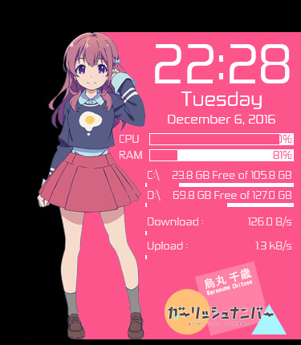
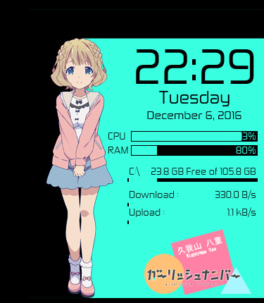
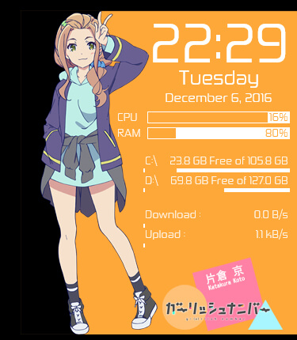
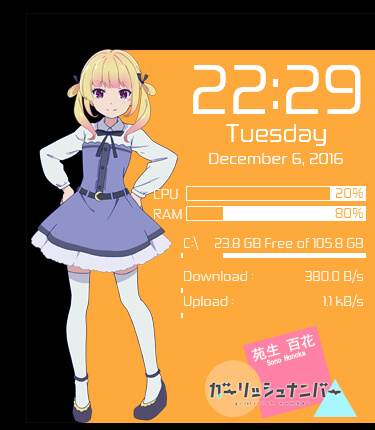
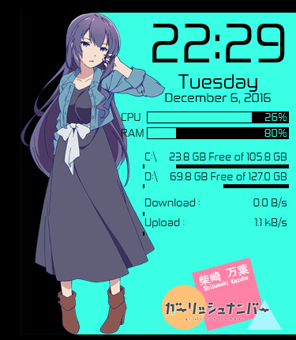

Yusatsu Nao's Blog
Wednesday, December 7, 2016
Gi(a)rlish Number Anime Rainmeter Released
Posted by Yusatsu Nao
Hello again guys, welcome to my site. Today, I post something well, just what I said a few days ago on the last post. Right now, I will share an Anime Rainmeter. The main theme is Gi(a)rlish Number. This anime is on air on Fall 2016, from october to december and only 12 Episodes. Still 3 or 4 Episodes left. And TODAY, The movie Kimi no Nawa is on Theatre in my Country, but the theatre is on the next city not on my city :'(. Well, it's okay, there's still plenty of time to watch it.Let's come back to the main topic, right now. I'll share Gi(a)rlish Number Anime Rainmeter. Inside this Rainmeter, there's five skins variations. Five skins based on five main girl characters on this Anime. First,
That is the character image, now here is the screenshot of the skins.





That is the screenshots. The black background is the tranparent area, you can download it from links below.
DOWNLOAD | PASSWORD
Copyright © 2016 Yusatsu Nao, Copyright © Diomedea
All images are copyright to their respective owners.
I hope you enjoy this skins. I will create another skin again tomorrow and other stuff too. So, follow this site and follow my official LINE@ Account, you can check it on About Page and find LINE@ Account on there.